Trees, up to 6 m tall.
6 ಮೀ. ಎತ್ತರದವರೆಗಿನ ಮರಗಳು.
Trees, up to 6 m tall.
மரங்கள், 6 மீ. உயரம் வரை வளரக்கூடியது.
Bark grey, smooth; blaze brown.
ತೊಗಟೆ ಬೂದು ಬಣ್ಣ ಹೊಂದಿದ್ದು ನಯವಾಗಿರುತ್ತದೆ;ಕಚ್ಚು ಮಾಡಿದ ಜಾಗ ಕಂದು ಬಣ್ಣದಲ್ಲಿರುತ್ತದೆ
Bark grey, smooth; blaze brown.
மரத்தின் பட்டை சாம்பல் நிறமானது, வழவழப்பானது; உள்பட்டை ப்ரவுன் நிறமானது.
Branchlets subterete, glabrous.
ಕವಲುಗಳು ಉಪದುಂಡಾಗಿದ್ದು ರೋಮರಹಿತವಾಗಿರುತ್ತವೆ.
Branchlets subterete, glabrous.
சிறியநுனிக்கிளைகள் குறுக்குவெட்டுத் தோற்றத்தில் வளையமானது, உரோமங்களற்றது.
Leaves simple, opposite, decussate; petiole up to 0.3 cm long, canaliculate, glabrous; lamina 5-10 x 1.5-4 cm, obovate, apex obtuse, base attenuate to acute, margin entire, pellucid gland dotted, coriaceous, drying brown; midrib canaliculate above; intramarginal nerve present; secondary_nerves many, parallel, slender; tertiary_nerves admedially ramified.
ಎಲೆಗಳು ಸರಳವಾಗಿದ್ದು ಅಭಿಮುಖವಾಗಿ ಜೋಡನೆಗೊಂಡಿದ್ದು ಕಾಂಡದ ಎರಡೂ ಕಡೆ ಎದುರು ಬದರಿನ ಲಂಬ ಸಾಲಿನಲ್ಲಿರುತ್ತವೆ; ತೊಟ್ಟುಗಳು 0.3 ಸೆಂ.ಮೀ. ವರೆಗಿನ ಉದ್ದಹೊಂದಿದ್ದು ಕಾಲುವೆಗೆರೆ ಸಮೇತವಿರುತ್ತವೆ ಮತ್ತುರೋಮರಹಿತವಾಗಿರುತ್ತವೆ;ಪತ್ರಗಳು 5 – 10 X 1.5 – 4 ಸೆಂ.ಮೀ.ವರೆಗಿನ ಗಾತ್ರವಿದ್ದು ಬುಗುರಿ ಆಕಾರ ಹೊಂದಿದ್ದು, ಚೂಪಲ್ಲದ ತುದಿ, ಒಳಬಾಗಿದ ಮಾದರಿಯಿಂದ ಹಿಡಿದು ಚೂಪಾಗಿರುವ ಮಾದರಿವರೆಗಿನ ಬುಡ,ನಯವಾದ ಅಂಚು,ಪ್ರಕಾಶ ಭೇಧ್ಯ ರಸಗ್ರಂಥಿ ಚುಕ್ಕೆಗಳನ್ನು ಹೊಂದಿದ್ದು ತೊಗಲನ್ನೋಲುವ ಮೇಲ್ಮೈ ಹೊಂದಿರುತ್ತವೆ ಮತ್ತು ಒಣಗಿದಾಗ ಕಂದು ಬಣ್ಣ ಹೊಂದಿರುತ್ತವೆ; ಮಧ್ಯ ನಾಳ ಪತ್ರದ ಮೇಲ್ಭಾಗದಲ್ಲಿ ಕಾಲುವೆಗೆರೆ ಸಮೇತವಿರುತ್ತದೆ; ಅಂಚಿನ ನಾಳಗಳು ಇರುತ್ತವೆ; ಎರಡನೇ ದರ್ಜೆಯ ನಾಳಗಳು ಅನೇಕವಿದ್ದು ಸಮಾಂತರದಲ್ಲಿರುತ್ತವೆ ಮತ್ತು ತೆಳುವಾಗಿರುತ್ತವೆ;ಮೂರನೇ ದರ್ಜೆಯ ನಾಳಗಳು ಎಲೆಯ ಅಕ್ಷದ ಕಡೆಗೆ ಕವಲುಗೊಂಡಿರುತ್ತವೆ.
Leaves simple, opposite, decussate; petiole up to 0.3 cm long, canaliculate, glabrous; lamina 5-10 x 1.5-4 cm, obovate, apex obtuse, base attenuate to acute, margin entire, pellucid gland dotted, coriaceous, drying brown; midrib canaliculate above; intramarginal nerve present; secondary_nerves many, parallel, slender; tertiary_nerves admedially ramified.
இலைகள் தனித்தவை, எதிரடுக்கமானவை, குறுக்குமறுக்கானவை; இலைக்காம்பு 0.3 செ.மீ. நீளமானது, குறுக்குவெட்டுத் தோற்றத்தில் கேனாலிகுலேட், உரோமங்களற்றது; இலை அலகு 5-10 x 1.5-4 செ.மீ., தலைகீழ் முட்டை வடிவானது, அலகின் நுனி மெட்டையானது, அலகின் தளம் அட்டனுவேட் முதல் கூரியது, அலகின் விளிம்பு முழுமையானது, ஒளிபுகும் சுரப்பி புள்ளிகளுடையது, கோரியேசியஸ், உலரும் போது ப்ரவுன் நிறமானது; மையநரம்பு மேற்புறத்தில் அலகின் பரப்பைவிட பள்ளமானது; விளிம்பு நரம்பு (இண்ட்ராமார்ஜினல் நரம்பு) கொண்டது; இரண்டாம் நிலை நரம்புகள் எண்ணற்றவை, இணையானவை, மெல்லியது; மூன்றாம் நிலை நரம்புகள் அட்மீடியல்லி ராமிபைடு.
Inflorescence terminal corymbose cymes; flowers white.
ಪುಷ್ಪಮಂಜರಿ ತುದಿಯಲ್ಲಿನ, ಮಧ್ಯಾರಂಭಿ ನೀಳ ಛತ್ರ ಮಾದರಿಯಲ್ಲಿರುತ್ತವೆ;ಹೂಗಳು ಬಿಳಿ ಬಣ್ಣದಲ್ಲಿರುತ್ತವೆ.
Inflorescence terminal corymbose cymes; flowers white.
மஞ்சரி தண்டின் நுனியில் காணப்படும் கோரியம்போஸ் சைம் வகை; மலர்கள் வெள்ளை நிறமானது.
Berry, black globose, crowned with calyx lobes, glabrous; seed one.
ಬೆರ್ರಿ ಫಲಗಳು ಕಪ್ಪು ಬಣ್ಣದಲ್ಲಿದ್ದು ಗೋಳಾಕಾರ ಹೊಂದಿದ್ದು ಮುಕುಟದಲ್ಲಿ ಪುಷ್ಪಪಾತ್ರೆಯ ಸಮೇತವಿರುತ್ತವೆ ಮತ್ತು ರೋಮರಹಿತವಾಗಿರುತ್ತವೆ;ಬೀಜ ಒಂದು
Berry, black globose, crowned with calyx lobes, glabrous; seed one.
முழுச்சதைகனி (பெர்ரி), கருப்பு நிறமானது கோளவடிவானது, நிரந்தரமான புல்லி இதழ்களுடையவை, உரோமங்களற்றது; ஒரு விதையுள்ள கனி.
 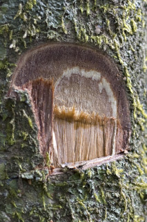
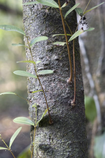
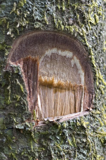
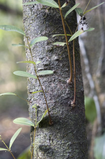

 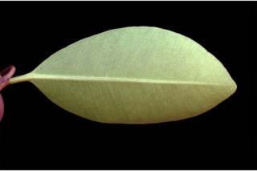
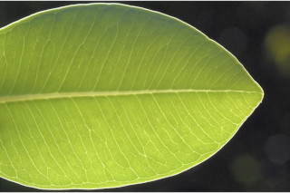
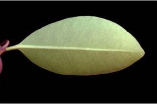
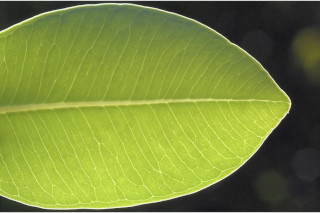

 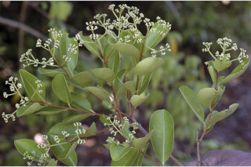
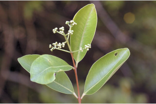
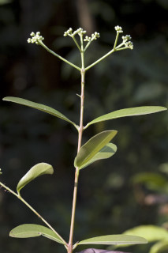
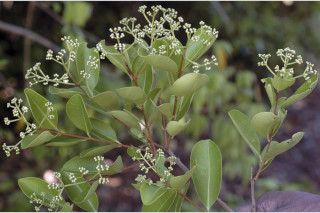
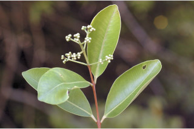
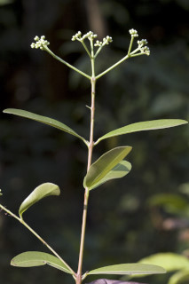
 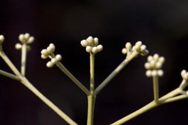
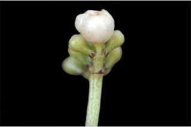
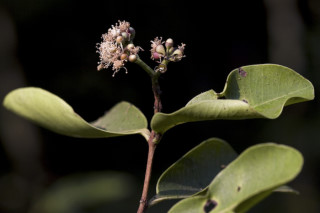
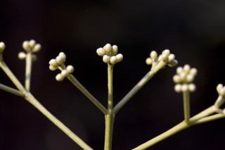
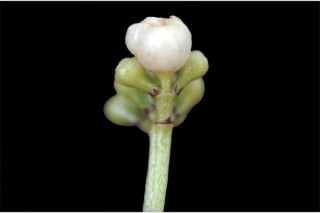
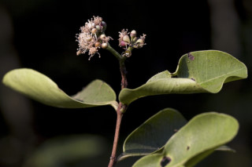